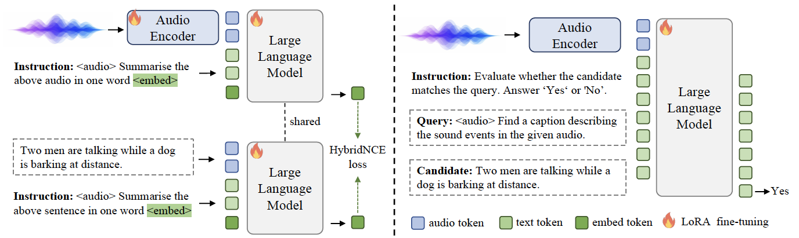
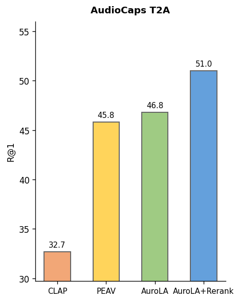
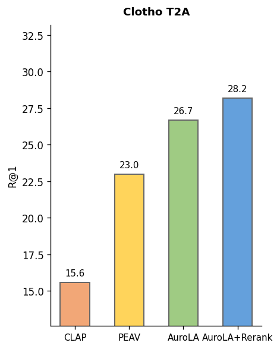
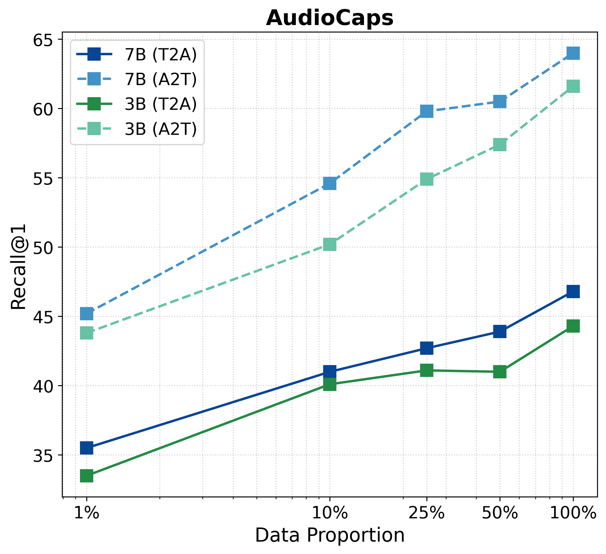
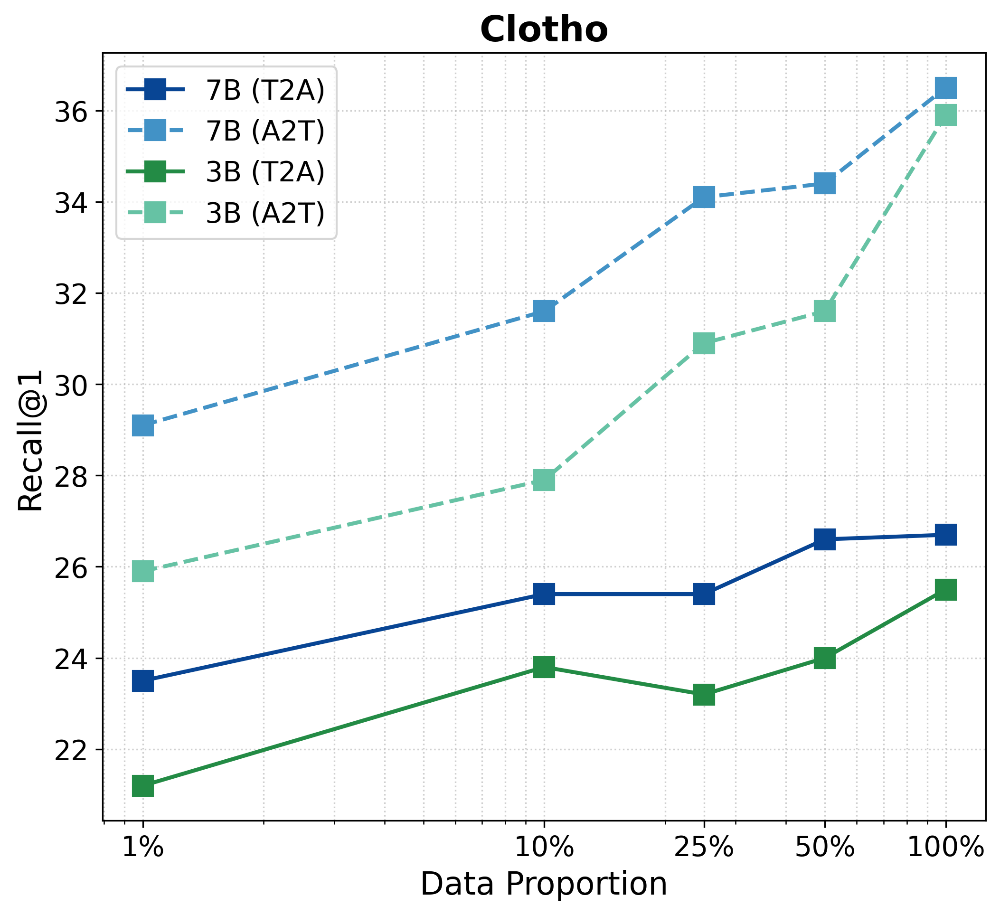

Scaling Audio-Text Retrieval with Multimodal Large Language Models
Visual Geometry Group, University of Oxford · Epidemic Sound
Technical Report
TL;DR
We propose AuroLA, a contrastive language-audio pre-training framework that repurposes a Multimodal LLM as a unified backbone for retrieval. The system builds scalable multi-granular audio captions, uses a Hybrid-NCE objective with hard-negative reweighting, and applies a bidirectional re-ranker to refine results. Experiments show consistent gains over prior audio-text retrieval SoTA, i.e., Perception Encoder Audio-Visual (PE-AV), with approximately 1% of their training data.
Visualisation
Model Architecture

Overall architecture of AuroLA and AuroLA-re-rank
Left: Re-purposing multimodal large language model for fast retrieval by explicit one-word limitation.
Right: Re-purposing multimodal large language model for precise re-ranking.
Results
Comparison with SOTA dual encoders


Scaling properties of AuroLA

